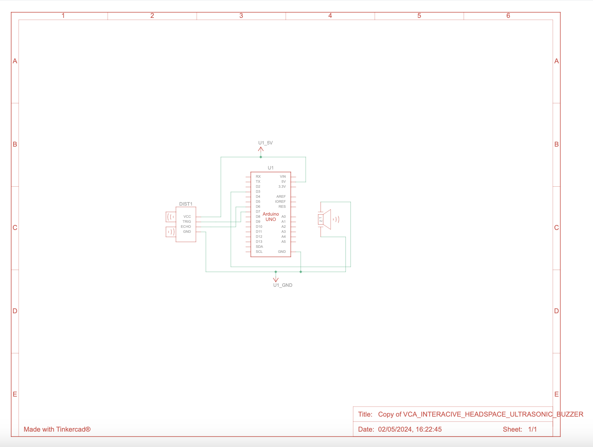
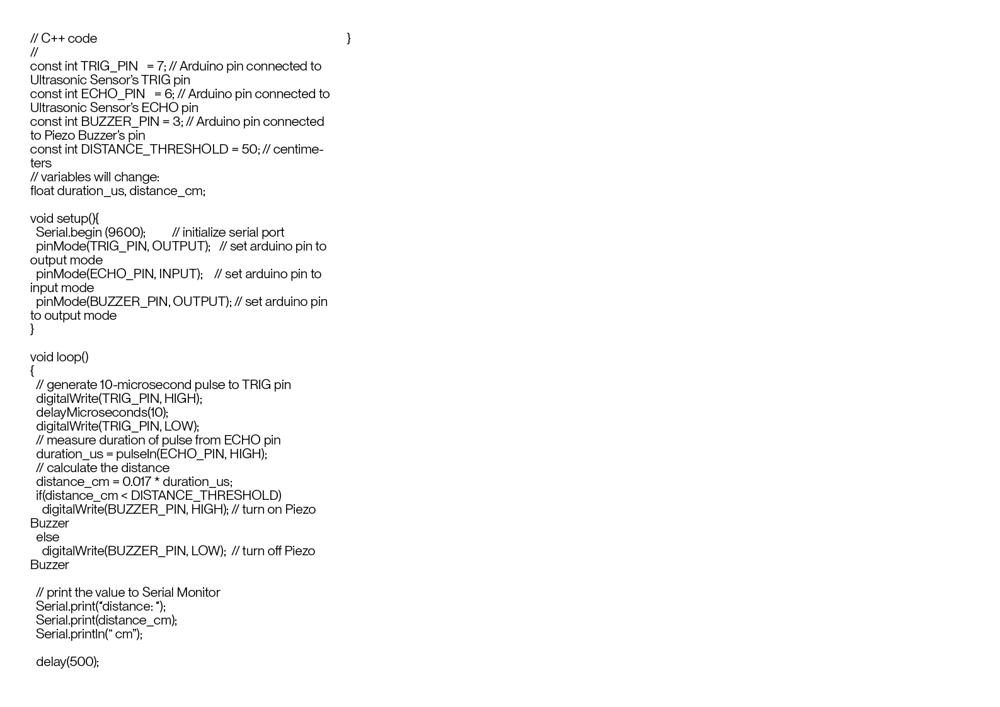

Involves our Arduino, breadboard, an ultrasonic sensor, and a dial of sorts. Essentially when you reach a certain distance of the sensore it will make a sound, and the dial element helps us to regulate how loud our output screams. unfortunately I was struggling to properly paste the code into this page for you to copy paste, however if you are lucky enough to be in this TinkerCad class you can copy the code from here. Don't forget to reset, and upload your code to the Arduino using Arduino Uno specfically.
 